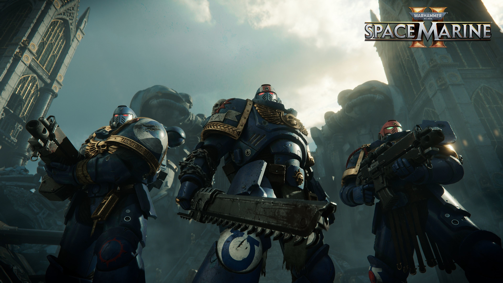
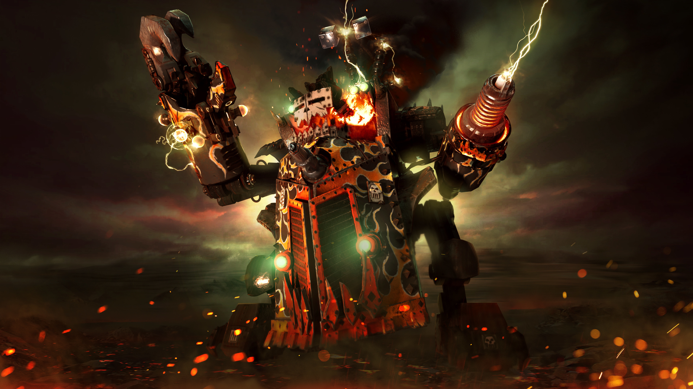
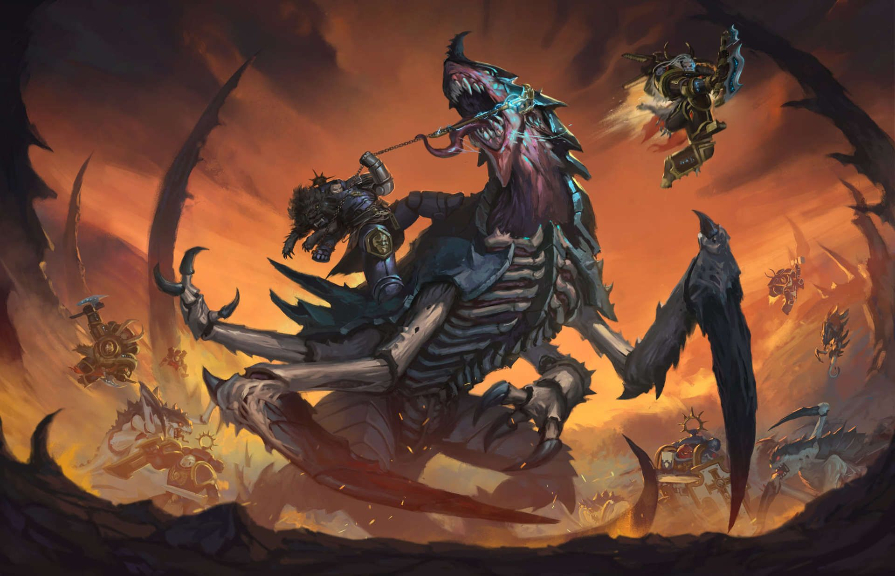
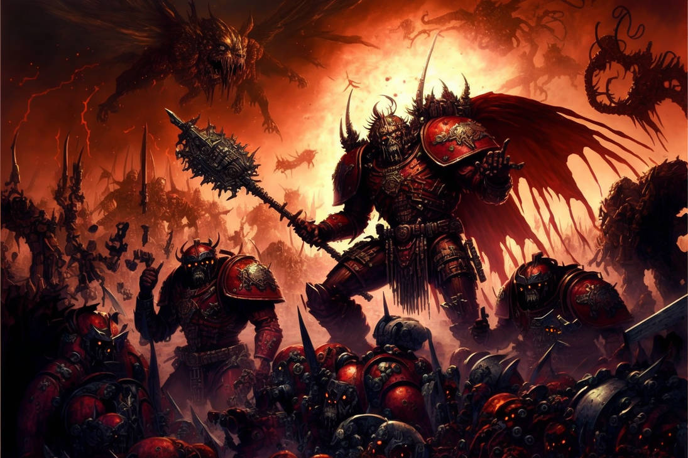
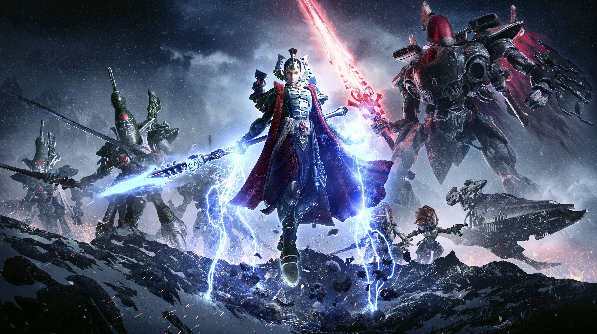

The most elite warriors of humanity, each battles they drive back the mutants, the heretics, the alien.

They revel in endless battle and chaos, driving their ramshackle technology through sheer collective belief as they roar "WAAAGH!" and sweep across the galaxy.

There are relentless bio-organism collective, focused on consuming planets to evolve and grow. They form a tidal wave of countless bio-weapons, destroying all life in their path.

The Chaos forces are dark and corrupting powers in Warhammer 40K, representing countless evil deities and twisted desires. They seek destruction, madness, and chaos, aiming to drag the entire galaxy into eternal darkness.

The Aeldari are an ancient and highly intelligent alien race in Warhammer 40K, once possessing a powerful empire that collapsed due to their own pride and arrogance. Reference source Reference source 2